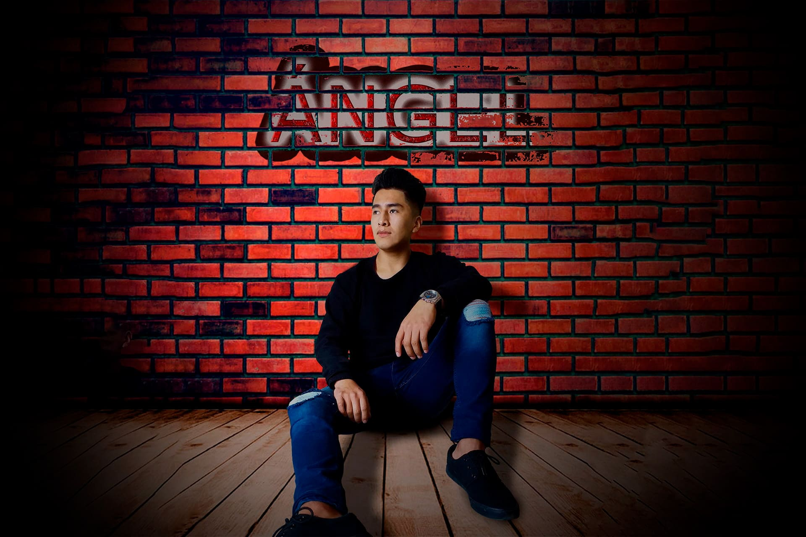
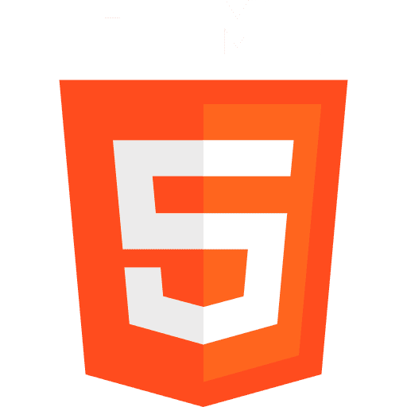
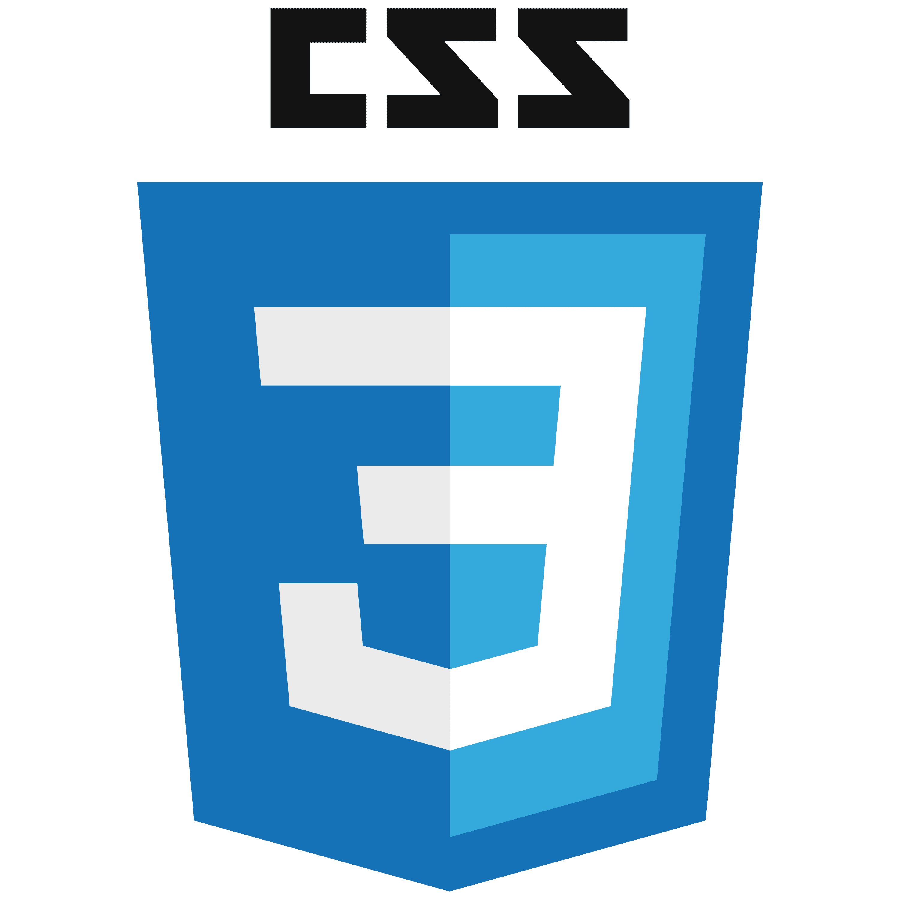
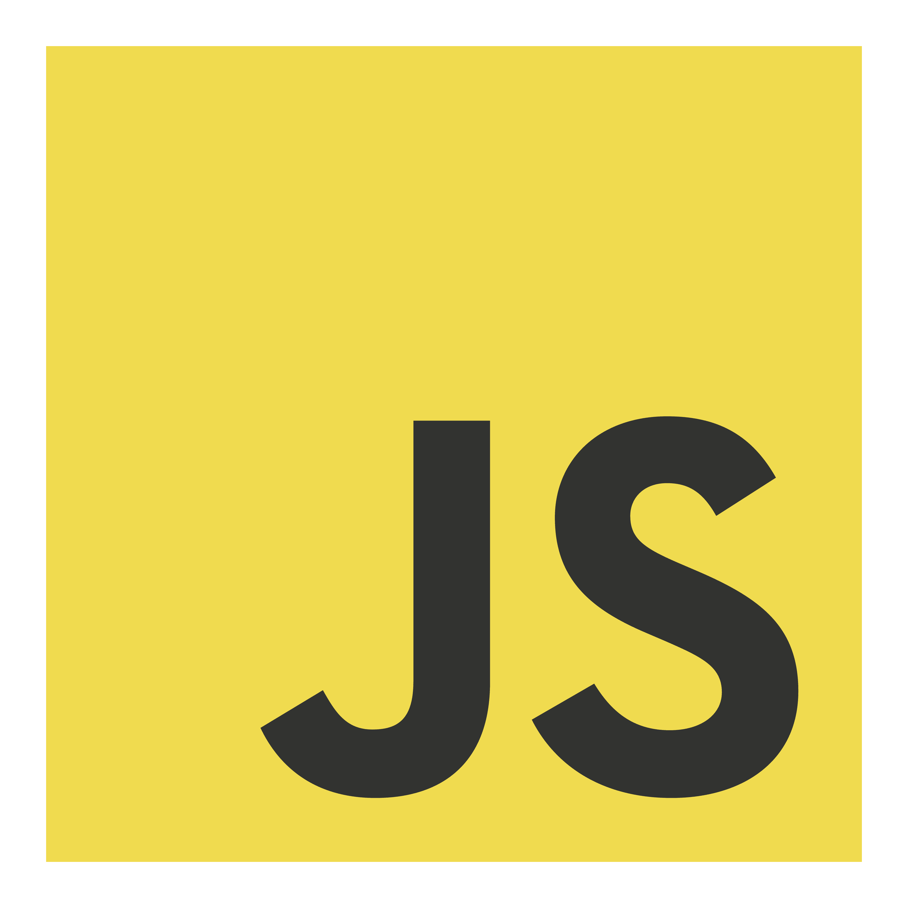
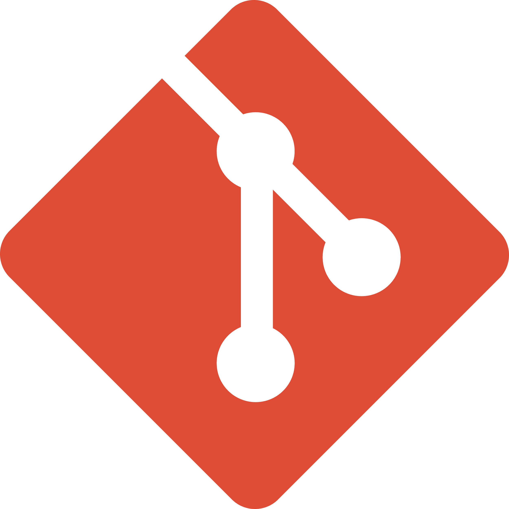
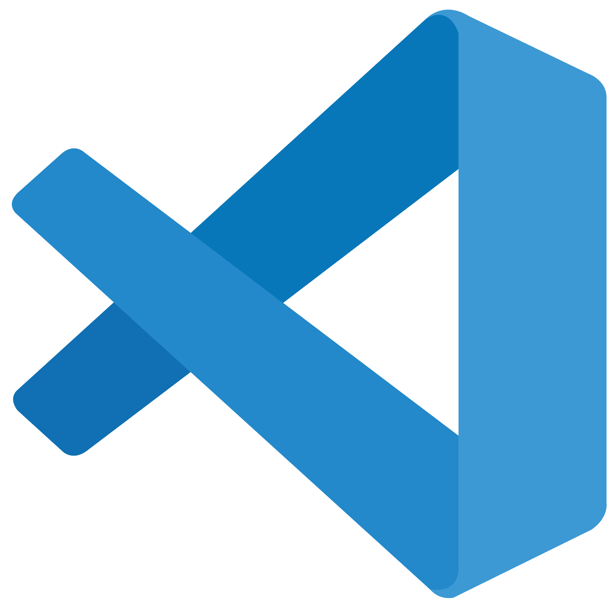
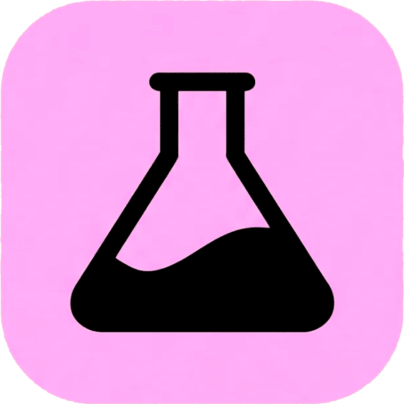
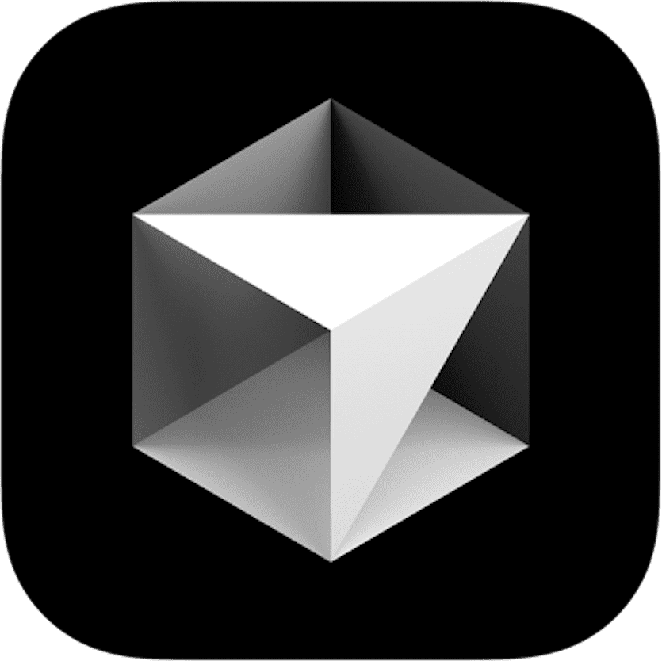

I build what matters, destroy what doesn't
_config> I create experiences, not just code. Systems Engineer optimizing processes and building structure where others see chaos. Life is too short for unnecessary complexity.
Infinite curiosity: what lies behind the matrix
_log> There's always something more waiting to be discovered. I live exploring what most overlook. Music by instinct, sports by discipline, character forged through daily effort.
Systems Engineer - Student of Everything
I solve technical problems for a living, but what really drives me is curiosity. How does this work? Why does it break? What can we build better? Being a student of everything means I never stop questioning, learning, or evolving.
What defines me
_config> Mas allá del desarrollo, estos son los principios fundamentales que guían mi trabajo diario y mis decisiones técnicas.
Quality First
I don’t just write code that works—I write code that lasts. I prioritize readability, testing, and maintainability.
Constant Innovation
Technology never stops, and neither do I. I dedicate time every week to exploring new tools and paradigms.
Teamwork
I firmly believe that clear communication and empathy are just as important as technical skills.
Professional Objectives
Software Development
Building solutions that actually work, creating solid, functional, and well-thought-out digital products — from the logic to the user experience — with a focus on solving real problems, not just writing code.
Applied Artificial Intelligence
AI-powered development, integrating AI as a strategic tool within every project I build, accelerating processes, improving decision-making, and creating smarter, more efficient products.
Business Digitalization
Transforming processes, empowering businesses, helping businesses optimize their internal procedures and systems through digitalization, turning manual tasks into efficient workflows that drive growth.
Community & Shared Future
Building in community, connecting with people who share this vision, learning together, and building a space where professional growth is amplified collectively, not in isolation.
Creations
A curated collection of my latest work in web development. From interactive frontend applications to robust backend systems and fullstack solutions.
Project 1
A brief description of Project 1.
Project 2
A brief description of Project 2.
El mundo de las guitarras
Una página web donde únicamente será constituida por el lenguaje de etiquetas HTML, con el fin de que se pueda ver lo que se puede hacer únicamente con este lenguaje principal para poder desarrollar una pagina web.
Stack:






